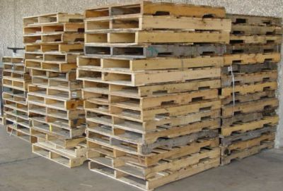
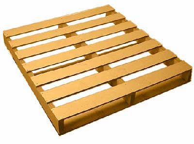
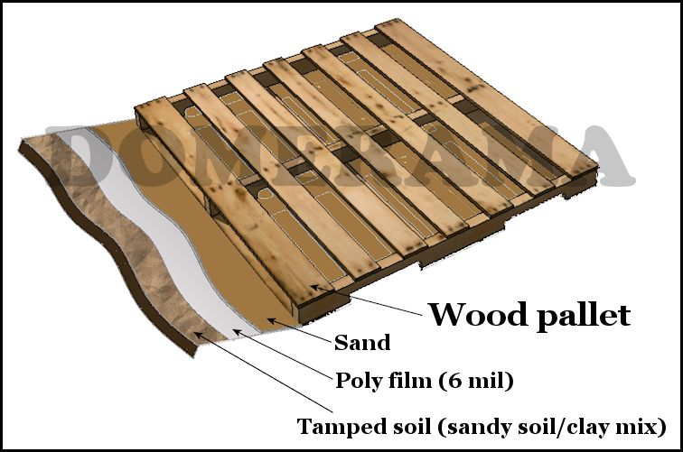

This could be your new floor for the geodesic dome, geodesic greenhouse, maybe even your yurt. Why? Because it’s almost free, it’s surprisingly sturdy and it will last for a very long time.

Wood pallets make an inexpensive floor or deck. Some are free, others are not. But many pallets being given away are more than acceptable for your geodesic dome or yurt flooring. They may not look pretty sometimes, but once you cover them with plywood, OSB or aspenite, even paint them, no one will know. The pallets serve as a frame under the actual floor and their shape makes the ideal to lay 4′X 8′ sheets over them.

Assembling the pallets together is quite simple: line up similar pallets and drill or nail them together. One of the best part of using pallets is that they have much of the hard work done, so no cutting or measuring; just attach them to each other.
Preparation is key to a solid base
Your surface under the pallets should be graded and flat. Then you may need to tamp the soil. This may not be required. In the back of our house the ground contains pit run, a combination of various sizes of rocks mixed in with sand, clay and soil, making the surface hard as concrete. All we needed to do was to fill out some spots to make the surface evenly flat; for those areas we did take soil from around the property and then tamped it.
Next we lay down a layer of poly film, commonly found in hardware and garden centers. This will serve to stop growth of plants. Ideally a black plastic film is preferred.
The final step is to lay down a layer of sand over the surface. The thickness is up to you, though we recommend at least 2 inches (5cm). This layer should also be tamped to even it out.

Covering the wood pallets with flooring
- For cost reasons, OSB (used in roofing as an alternative to plywood) is about half the cost of plywood and very resistant to weather conditions. If you cut parts off an OSB sheet, remember to seal the cut with an appropriate paint or sealant because humidity could leak into the sheet over time.
- Plywood or OSB, it is a good idea to paint the sheets if you do not cover your surface with anything else. A good quality preservative is also a good idea
- If you do cover your plywood or OSB surface with a floating floor for example, a layer of insulation is recommended (as in a regular floor covering).
- If you do not not cover the pallets at all, consider using a thicker layer of poly film as water spilled from above may form puddles under the pallets. Your best option is to create natural drains in the sand layer (a series of small ditches running from the center to the outer edge). You should also consider adding a second layer of poly film above the sand layer.
What results can you expect?
Watch the video below to see how Mike used wood pallets to make a backyard deck.